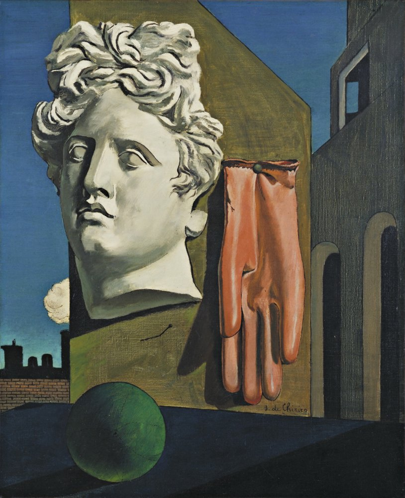

The Song of Love
Giorgio de Chirico · 1914 · Oil on canvas · 73 × 59.1 cm · Museum of Modern Art, New York
In copyright. Look and learn: shown for study, not for download.
De Chirico painted this in 1914, ten years before André Breton founded the Surrealist movement. The locomotive on the horizon recurs in his pictures of the period; it has been interpreted as a symbol of his father, an engineer who was involved in planning railroad lines in Greece.